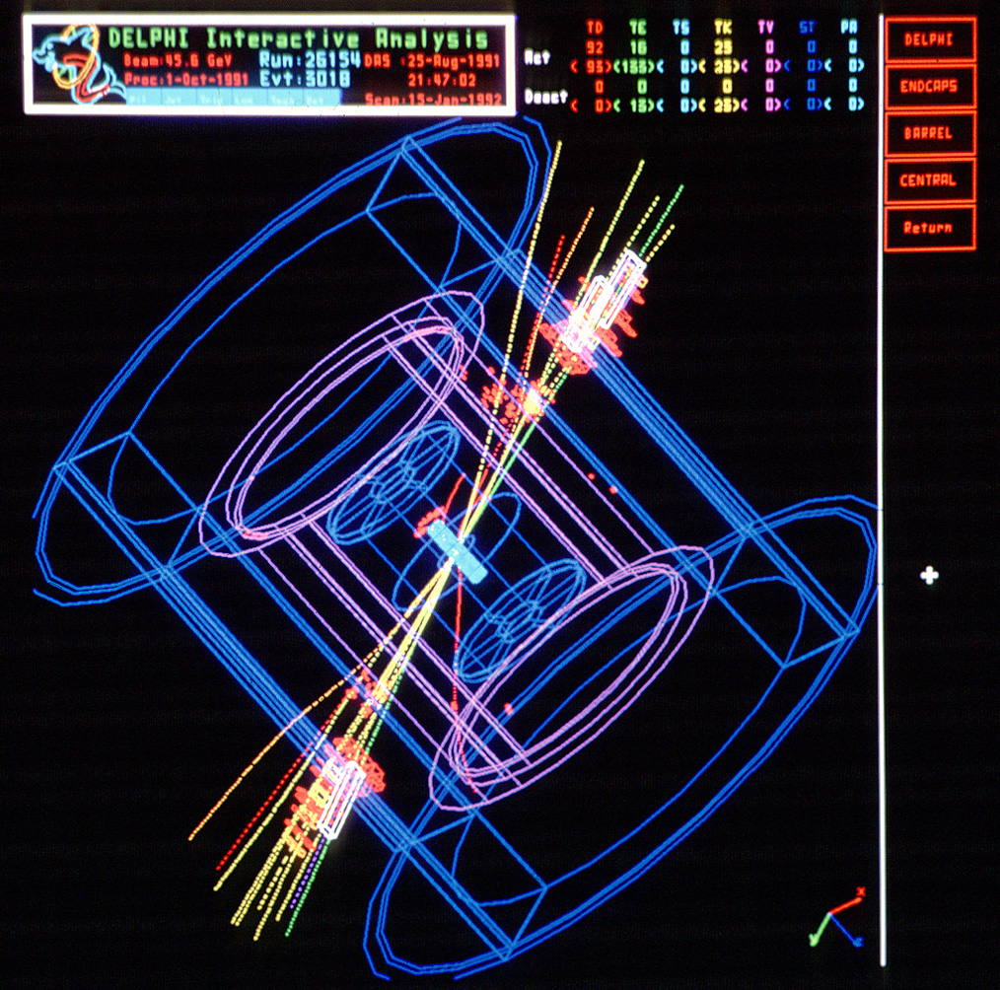
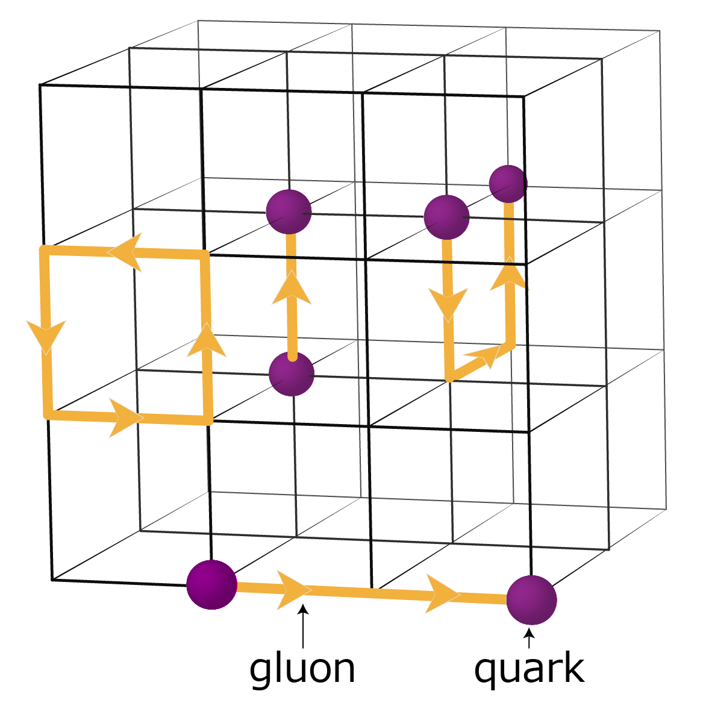

Há outra diferença grande entre as interações eletromagnética e forte: enquanto se pode observar um eléctron livre, nunca foi observado um quark livre. Isto levou os físicos a postular que existe um confinamento de cor. Somente objetos neutros de cor podem ser vistos. Por exemplo: imagine um hádron que é formado por dois quarks up e um quark down (um próton). Cada um dos quarks desse hádron tem uma cor distinta, mas o próton em si não tem nenhuma: vermeho, azul e verde se "neutralizam".
Explicando melhor: consideremos um méson. Imagine que você vai fixar um quark e vai puxar o antiquark de modo a separar os dois. O que você acha que aconteceria?
Lembrando da seção anterior, a constante de acoplamento cresce com o aumento da distância, de modo que o par quark-antiquark não quer se separar! Vai ficar cada vez mais difícil separá-los, de modo que chega uma hora que é mais vantajoso (energeticamente) criar um novo par quark-antiquark do que manter quarks e antiquarks tão separados assim. Isto é análogo ao que acontece com uma fita elástica que se alonga e acaba se rompendo.
Em consequência disto, não observamos quarks ou glúons isolados, mas jatos de partículas. A figura abaixo ilustra um exemplo:
Resultado de colisão no detector DELPHI. Fonte: (http://cds.cern.ch/record/39449?ln=pt)
No acelerador LEP, predecessor do LHC no CERN, uma colisão entre um eléctron e sua antipartícula, o pósitron, pode criar um par quark-antiquark que tentam se afastar se materializando em dois jatos de partículas.
Em resumo, não se observa quarks e glúons isolados (confinamento de cor), mas sim jatos de partículas originado neles. Assim, a ideia de que não se pode observar objetos com cor tem boa comprovação experimental.
Mas porque os físicos têm que eleger isso como um princípio, ao invés de comprovar com cálculos? No regime de grandes distâncias, onde a constante de acoplamento é considerável, os cálculos são muito difíceis. Assim, uma das ferramentas usadas é simular em computadores as interações entre quarks e glúons num espaço-tempo discretizado (Cromodinâmica Quântica (ou QCD) na Rede).
Observe a figura:
QCD na rede. Fonte: (http://www.jicfus.jp/en/promotion/pr/mj/guido-cossu/)
As arestas dos cubos são um campo formado por glúons, e os quarks (ou antiquarks) ficam nos vértices.
Estas simulações conseguem prever as partículas com massa que estão em acordo com os dados, mas nenhuma partícula com cor é vista. Ou seja, o confinamento de cor existe!
Porém, é muito frustrante ter que confiar em computadores que dão uma resposta sem explicação. Assim, foi instituído um prêmio de 1 milhão de dólares pelo Clay Institute of Mathematics para quem comprovar o confinamento de maneira rigorosa.
Para saber mais sobre o prêmio, acesse o site do Clay Institute.